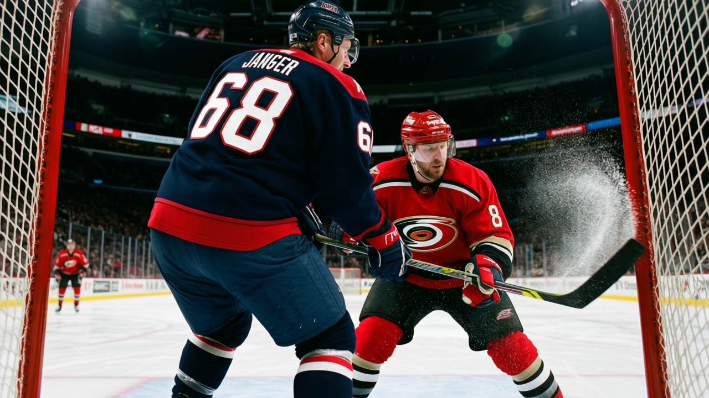

WSH
WSHAward Watch: Jaromir Jagr is 32, and the only man ahead of him is 34
The Capitals' left-winger is 10 points behind Bill Guerin, on a pace that would have won him four straight Art Ross trophies, and Washington is projected right at the playoff line
 Howard BlaineSenior writer, The Blaine Rankings · The Hockey Gazette
Howard BlaineSenior writer, The Blaine Rankings · The Hockey Gazette
 Jaromir Jagr88 is second in the league in scoring at 68 points in 33 games, a 169-point pace over 82. The only man above him,
Jaromir Jagr88 is second in the league in scoring at 68 points in 33 games, a 169-point pace over 82. The only man above him,  Bill Guerin89 in Dallas, is 34 years old and running at 178. The two of them have separated from the next group,
Bill Guerin89 in Dallas, is 34 years old and running at 178. The two of them have separated from the next group,  Peter Forsberg95 and
Peter Forsberg95 and  Markus Naslund89 at 169 and 159 respectively, and the gap between second and third is zero while the gap between first and second is nine. Jagr is doing this on a contract that pays him $11.20M a season with 6 years remaining, the largest individual salary in the league that I can find on the Contract Ledger, and his club is projected to land at the playoff line.
Markus Naslund89 at 169 and 159 respectively, and the gap between second and third is zero while the gap between first and second is nine. Jagr is doing this on a contract that pays him $11.20M a season with 6 years remaining, the largest individual salary in the league that I can find on the Contract Ledger, and his club is projected to land at the playoff line.
The Washington Capitals sit at 39 points in 33 games, 1.182 points per game, 12th in the league by that measure. Their projection at season's end, extrapolated from 33 games, is 97 points. Last season they finished with 99 and made the second round. They are on pace to do almost exactly the same thing, which is the problem and the promise both.
The Bureau's Book has Jagr at 88 overall today, which sits below his base grade of 91. The Development Index has him at base, neither climbing nor falling. But the attributes underneath show a 32-year-old man whose edges are intact. His DEKG grade is 99. His SPEE is 97. His ACCE is 95, his PASS is 95, his PUCK is 95. At 32, in his sixteenth professional season, the man from Kladno still has the best deke in this league and the second-best speed among the 30 players I can see on the scoring sheet. The grades that have sagged are the ones he never needed: FACE at 50, FIGH at 50, CHKG at 51.
He has 30 goals and 38 assists in 33 games at 22.6 minutes a night. Last season he played all 82 and finished with 82 goals, 69 assists, 151 points. That was the year that won him nothing, because Washington made the playoffs and lost in the second round. He scored 30 points in 13 playoff games that spring, 17 of them goals, and it did not matter. He told The Tunnel's Jan Kowalczyk this week, in a different context, about the difference between individual production and the room's feeling, and the sentiment holds: the points do not feel like much when the room is quiet. The quote was about a different team, a different moment, but Jagr has lived inside that sentence for three years in Washington.
The contract and the ceiling
$11.20M with 6 years left. At 38, Jagr will be the oldest player on this sheet by two years, and the Capitals will still owe him. The payroll is $57.58M, and his line is 19.4 percent of it. The cost per point for the whole club is $1.48M, which is not terrible. But that number only works because of him. Take Jagr's 68 points out of the equation and the rest of Washington has produced 71 points from everyone else on the roster in 33 games, which is a team that would be buried at the bottom of the standings without its second-place scorer.
 Olaf Kolzig92 is the best reason to think Washington is not just a Jagr team. He is 15-14-0 with a 3.39 goals-against average and a 0.849 save percentage in 31 games, the workhorse of the league's fifth-most-used goaltender. He won the Vezina last season and his numbers are within reach of that form again.
Olaf Kolzig92 is the best reason to think Washington is not just a Jagr team. He is 15-14-0 with a 3.39 goals-against average and a 0.849 save percentage in 31 games, the workhorse of the league's fifth-most-used goaltender. He won the Vezina last season and his numbers are within reach of that form again.  Peter Bondra85 has 54 points in 28 games, a 158 pace that would be his best since the trade brought Jagr to Washington. The supporting cast is not empty, but it is thin:
Peter Bondra85 has 54 points in 28 games, a 158 pace that would be his best since the trade brought Jagr to Washington. The supporting cast is not empty, but it is thin:  Sergei Gonchar82 at 82 overall is the best defender on the roster, and the third-line scoring drops off the sheet entirely after Bondra.
Sergei Gonchar82 at 82 overall is the best defender on the roster, and the third-line scoring drops off the sheet entirely after Bondra.
The Southeast race is where Washington has to survive. Carolina leads at 47 points, Tampa Bay is at 43, and the Capitals are at 39 with 5 more games played than Tampa Bay and 1 fewer than Carolina. The projected pace says Washington lands at 97, Tampa Bay at 107, Carolina at 113. If those projections hold, Washington misses the playoffs by 10 points to the second seed in its own division. That is the arithmetic the room has to change.
What could change it. Jagr sat one game in mid-December and returned. The body part is not designated on the record, and the absence lasted a single day. He has played 33 of the team's 33 games minus that one. His ice time has not dropped: 22.6 minutes a night, which is the fourth-highest on the roster among skaters I can verify on the sheet, and his pace has held. The Development Index at base means he is not a player in free fall. At 88 overall, he is still the third-highest-rated Washington player on the roster, behind Kolzig at 92 and ahead of Bondra at 85.
What a 97-point team needs
The last time Jagr's team made noise was last spring, when Washington won two games in a first-round series and lost the next four. He scored 17 goals in 13 games. Nobody remembers. The 1999 Hart Trophy, the four consecutive scoring titles from 1998 through 2001, the Olympic gold in Nagano, the seven-point nights in Pittsburgh and in Washington: all of it sits behind three years in a building that is now projected to watch the playoffs from home for the second time in four seasons.
He is 32. The Book says 88. The pace says 169. The contract says six more years. And the standings say Washington is 8 points out of a playoff spot with 49 games left, a margin that is neither impossible nor comfortable. It is exactly the distance that separates a man from a memory.